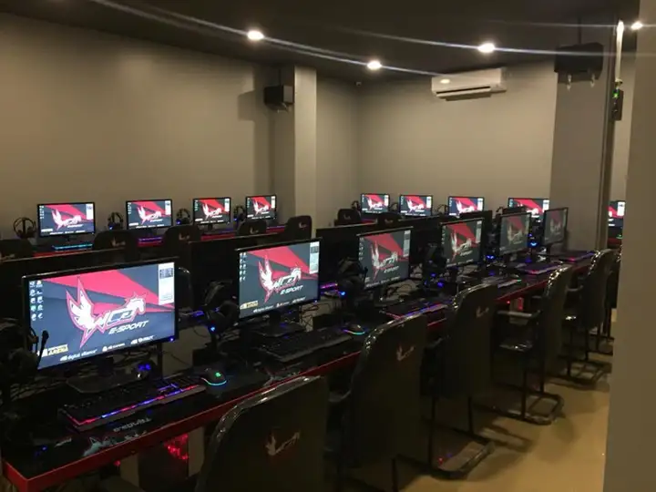

Our Projects

This place was built on October 20,2017,in this photo it is after the Grand Opening & there are no visitors yet
this place can also be used for Tournament games

The famous team in 2017 in Indonesia TEAM NXL CSGO division once played here and won the match against the Nocturnal Team